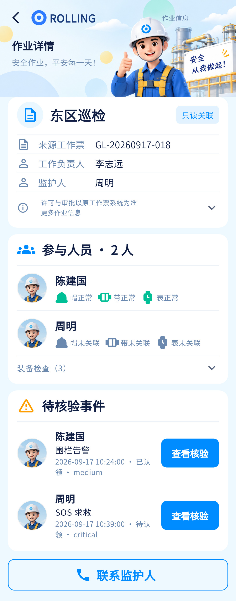

核心场景覆盖较完整，先处理信息层级与底栏，再核对字段和真实跳转。
相同 · 已有基础
作业信息、票号、负责人、监护人、参与人员、装备核查、核验事件、联系监护人都已存在。
不同 · UI与场景
当前部分作业字段和装备检查折叠；设计主要字段直接展示；当前底部导航被显式隐藏，联系按钮为描边。
01 / 先看 UI
两图显示宽度统一；设计390px与当前360逻辑宽的画布不同。各图可独立滚动到底，点击“原图”放大。


使用既有组件截图；业务数据为示例。
02 / 逐项核对功能与小交互
入口：作业任务 → 任务；现场 → 查看作业 · 当前形态：子页面
| 编号 | 部位 | 设计要求 | 当前UI | 功能结论 | 下一步 |
|---|---|---|---|---|---|
| 06-01 | 头部 | 标题、Logo、插画、返回 | 当前已有，但标题/裁切/顶部比例不同 | 已有代码：返回父页，无栈回现场 | 沿既有比例小调，不复制静态状态栏 |
| 06-02 | 基础资料 | 状态、名称、票号、负责人、监护人、区域、计划时间 | 当前区域/时间/状态等在更多信息里 | 已有代码：详情接口有字段渲染 | 优先常驻显示关键字段；实际时间等增强放折叠区 |
| 06-03 | 审批边界 | 许可与审批以原工作票系统为准 | 已有只读关联说明 | 已有代码：只读详情 | 保留，不新增票据审批或伪造审批成功 |
| 06-04 | 人员 | 姓名、人数、在岗、帽带表状态 | 当前人数、姓名、装备图标存在；图示在岗标记不等于装备状态 | 部分：成员与装备检查已有，无独立在岗证明 | 在岗若无字段显示未知，统一未知/缺少颜色 |
| 06-05 | 装备核查 | 成员帽/带/表逐项状态 | 当前可展开装备检查 | 已有代码：equipment-check接口 | 保留明细和needsConfirm，不能只剩三个正常图标 |
| 06-06 | 事件 | 待核验事件及时间、状态、入口 | 当前多条列表，存在英文风险级别展示 | 已有代码：task/events并按事件ID进入 | 翻译风险级别，统一事件人、类型、状态 |
| 06-07 | 监护联系 | 联系监护人 | 当前底部描边按钮 | 已有代码：按监护人personId进入通讯，无监护人提示 | 颜色对齐，验证不能联系错人 |
| 06-08 | 子页跳转 | 成员到人员、事件到核验/SOS | 当前已有 | 已有代码：稳定ID导航 | 验收去/回路径、作用域与返回位置 |
| 06-09 | 底部 | 图中四栏常驻 | 当前/tasks/:id隐藏底栏 | 差异明确：不是截图漏拍 | 按本次要求及项目底栏约定恢复/统一，保留按钮安全区 |
| 06-10 | 示例态 | 设计数据均示例 | 当前数据不可用时可查看界面示例 | 已有代码：示例明确提示且不冒充真实联系 | 保留边界；验收时分别采真实空态和示例态 |
源码依据
queries/tasks.dart:275,332,383；queries/work_reference.dart；app.dart:449
链接为随报告保存的带行号快照；行号对应分析时源码。以函数和字段共同定位，不能将请求代码视为执行成功证据。